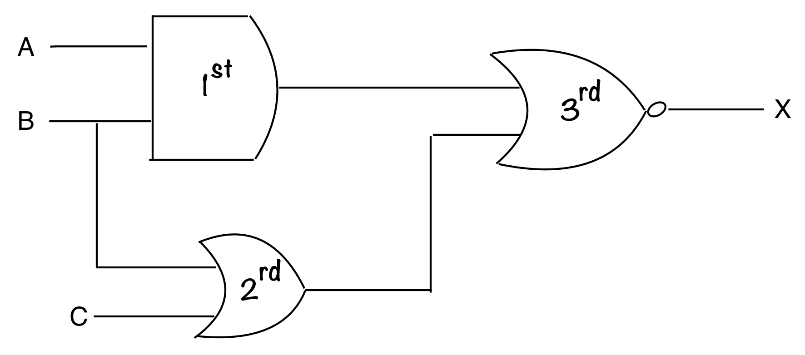

Logic Gates & Circuits
Types of Logic Gates
- OR Gate - Takes in 2 inputs.
The gate will give an output of 1, if either one gate has 1 present in the input
To get the output use the formula ~~> X = A + BInput Output A B X 0 0 0 0 1 1 1 0 1 1 1 1 - AND Gate - Takes in 2 inputs.
The gate will give an output of 1, if both inputs have 1 present.
To get the output use the formula ~~> X = A * BInput Output A B X 0 0 0 0 1 0 1 0 0 1 1 1 - NOT Gate - Takes in 1 input. The gate will output what is opposite of the input
To get the output use the formula ~~> X = A'Input Output A X 0 1 1 0 - NOT OR (NOR) Gate - Takes in 2 inputs.
This gate will output what is opposite to the OR gate.
To get the output use the formula ~~> X = (A+B)'Input Output A B X 0 0 1 0 1 0 1 0 0 1 1 0 - NOT AND (NAND) Gate - Takes in 2 inputs.
This gate will output what is opposite of the AND gate
To get the output use the formula ~~> X = (A * B)'
">Input Output A B X 0 0 1 0 1 1 1 0 1 1 1 0 - EXCLUSIVE OR (XOR) Gate - Takes in 2 inputs.
This gate will produce 1 if (input A is 1 AND input B is 0) OR (input A is 0 AND input B is 1).
To put it simply, If no '1's is present in the output, the result is 0. If one '1' is present in the input, the output will be 1. But if there is two '1's then the output is 0.
To get the output use the formula ~~> X = (A * B') + (A' * B)
">Input Output A B X 0 0 0 0 1 1 1 0 1 1 1 0
Logic Circuits
Logic circuits is the combination of many logic gates make a network of them. We can have multiple inputs and multiple gates, this type of logic gates is found all over machine. When your learning programming languages, you will surely meet the term 'AND', 'OR', this are all logic gates inside your machine that will receive your input and provide an appropriate output
Like seen in the example above, that is a complex logic circuit. But here is a way to solve them easily
- Calculate the output of the '1st' logic gate
- Calculate the output of the '2nd' logic gate
- Now since you have 2 outputs already, you can calculate the output of the 3rd gate
In exams, they would want you to calculate all the possible output of X. You can do this by using a trace table
| Inputs | Workings | Output | ||||
|---|---|---|---|---|---|---|
| A | B | C | 1 st -> A AND B | 2 nd -> B OR C | 3 rd -> 1 st NOR 2 nd | X |
| 0 | 0 | 0 | 0 | 0 | 1 | 1 |
| 0 | 0 | 1 | 0 | 1 | 0 | 0 |
| 0 | 1 | 0 | 0 | 1 | 0 | 0 |
| 0 | 1 | 1 | 0 | 1 | 0 | 0 |
| 1 | 0 | 0 | 0 | 0 | 1 | 1 |
| 1 | 0 | 1 | 0 | 1 | 0 | 0 |
| 1 | 1 | 0 | 1 | 1 | 0 | 0 |
| 1 | 1 | 1 | 1 | 1 | 0 | 0 |